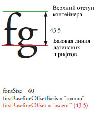
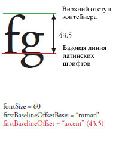
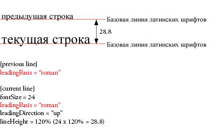
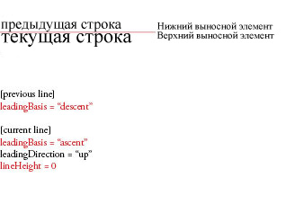
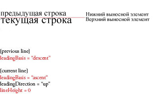
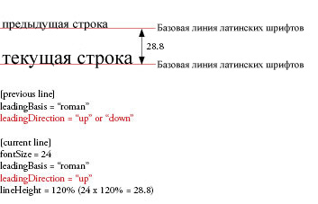
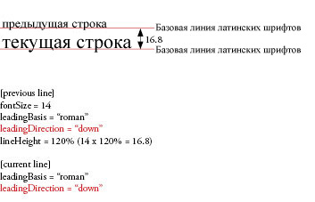
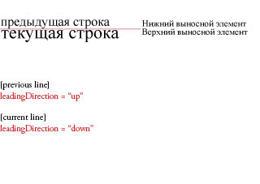
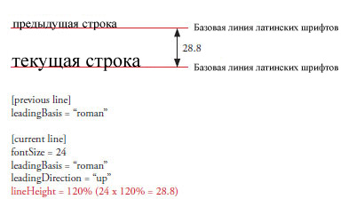

| Пакет | flashx.textLayout.formats |
| Интерфейс | public interface ITextLayoutFormat |
| Средство реализации | ContainerController, FlowElement, TextLayoutFormat |
| Язык версии: | ActionScript 3.0 |
| Версии среды выполнения: | Flash Player 10, AIR 1.5 |
| Свойство | Определено | ||
|---|---|---|---|
| alignmentBaseline : * [только для чтения]
Указывает базовую линию, по которой выравнивается основная базовая линия. | ITextLayoutFormat | ||
| backgroundAlpha : * [только для чтения]
Альфа-значение (прозрачности) для фона (принимает значение по умолчанию, если имеет значение undefined в процессе каскада). | ITextLayoutFormat | ||
| backgroundColor : * [только для чтения]
Цвет фона (принимает значение по умолчанию, если имеет значение undefined в процессе каскада). | ITextLayoutFormat | ||
| baselineShift : * [только для чтения]
Значение сдвига базовой линии относительно значения dominantBaseline. | ITextLayoutFormat | ||
| blockProgression : * [только для чтения]
Определяет вертикальное или горизонтальное размещение строки. | ITextLayoutFormat | ||
| breakOpportunity : * [только для чтения]
Управляет местом разрыва строк при форматировании текста по размеру окна. | ITextLayoutFormat | ||
| cffHinting : * [только для чтения]
Тип используемого для текста хинтинга CFF. | ITextLayoutFormat | ||
| clearFloats : * [только для чтения]
Определяет тип обтекания текста вокруг плавающего объекта. | ITextLayoutFormat | ||
| color : * [только для чтения]
Цвет текста. | ITextLayoutFormat | ||
| columnCount : * [только для чтения]
Число текстовых колонок (принимает значение по умолчанию, если в процессе каскада было установлено значение undefined). | ITextLayoutFormat | ||
| columnGap : * [только для чтения]
Указывает размер средника между колонками в пикселях (принимает значение по умолчанию, если в процессе каскада было установлено значение undefined). | ITextLayoutFormat | ||
| columnWidth : * [только для чтения]
Ширина колонки в пикселях (принимает значение по умолчанию, если в процессе каскада было установлено значение undefined). | ITextLayoutFormat | ||
| digitCase : * [только для чтения]
Тип регистра цифр в тексте. | ITextLayoutFormat | ||
| digitWidth : * [только для чтения]
Тип ширины цифр в тексте. | ITextLayoutFormat | ||
| direction : * [только для чтения]
Задает уровень двунаправленной вложенности текста в блоке по умолчанию. | ITextLayoutFormat | ||
| dominantBaseline : * [только для чтения]
Указывает, какая из базовых линий элемента привязывается к alignmentBaseline для определения позиции элемента в строке по вертикали. | ITextLayoutFormat | ||
| firstBaselineOffset : * [только для чтения]
Указывает позицию базовой линии первой строки в контейнере. | ITextLayoutFormat | ||
| fontFamily : * [только для чтения]
Имя используемого шрифта или разделенный запятой список имен шрифтов. | ITextLayoutFormat | ||
| fontLookup : * [только для чтения]
Поиск используемых шрифтов. | ITextLayoutFormat | ||
| fontSize : * [только для чтения]
Размер текста в пикселях. | ITextLayoutFormat | ||
| fontStyle : * [только для чтения]
Стиль текста. | ITextLayoutFormat | ||
| fontWeight : * [только для чтения]
Толщина текста. | ITextLayoutFormat | ||
| justificationRule : * [только для чтения]
Правило, используемое для выравнивания текста в абзаце. | ITextLayoutFormat | ||
| justificationStyle : * [только для чтения]
Стиль, используемый для выравнивания абзаца. | ITextLayoutFormat | ||
| kerning : * [только для чтения]
Кернинг регулирует количество пикселей между определенными парами символов с целью улучшения удобочитаемости текста. | ITextLayoutFormat | ||
| leadingModel : * [только для чтения]
Указывает модель интерлиньяжа, которая является комбинацией основы и направления интерлиньяжа. | ITextLayoutFormat | ||
| ligatureLevel : * [только для чтения]
Управляет тем, какая лигатура, определенная в шрифте, может использоваться в тексте. | ITextLayoutFormat | ||
| lineBreak : * [только для чтения]
Управляет переносом слов в контейнере (принимает значение по умолчанию, если в процессе каскада было установлено значение undefined). | ITextLayoutFormat | ||
| lineHeight : * [только для чтения]
Управление интерлиньяжем текста. | ITextLayoutFormat | ||
| lineThrough : * [только для чтения]
Если значение равно true, применяет перечеркивание, размещая линию посередине строки. | ITextLayoutFormat | ||
| linkActiveFormat : * [только для чтения]
Определяет атрибуты форматирования для ссылок в нормальном состоянии. | ITextLayoutFormat | ||
| linkHoverFormat : * [только для чтения]
Определяет атрибуты форматирования, используемые для ссылок в состоянии наведения, когда мыши находится в пределах ссылки. | ITextLayoutFormat | ||
| linkNormalFormat : * [только для чтения]
Определяет атрибуты форматирования для ссылок в нормальном состоянии. | ITextLayoutFormat | ||
| listAutoPadding : * [только для чтения]
Определяет автоотступ начального края списков, если значением заполнения этой стороны списка является auto. | ITextLayoutFormat | ||
| listMarkerFormat : * [только для чтения]
Определяет маркеры для списка атрибутов форматирования. | ITextLayoutFormat | ||
| listStylePosition : * [только для чтения]
Допустимые значения: ListStylePosition.INSIDE, ListStylePosition.OUTSIDE, FormatValue.INHERIT. По умолчанию значение равно undefined, что указывает на то, что оно не установлено. Если значение равно undefined, в процессе каскада это свойство наследует свое значение от вышестоящего элемента. | ITextLayoutFormat | ||
| listStyleType : * [только для чтения]
Допустимые значения: ListStyleType.UPPER_ALPHA, ListStyleType.LOWER_ALPHA, ListStyleType.UPPER_ROMAN, ListStyleType.LOWER_ROMAN, ListStyleType.NONE, ListStyleType.DISC, ListStyleType.CIRCLE, ListStyleType.SQUARE, ListStyleType.BOX, ListStyleType.CHECK, ListStyleType.DIAMOND, ListStyleType.HYPHEN, ListStyleType.ARABIC_INDIC, ListStyleType.BENGALI, ListStyleType.DECIMAL, ListStyleType.DECIMAL_LEADING_ZERO, ListStyleType.DEVANAGARI, ListStyleType.GUJARATI, ListStyleType.GURMUKHI, ListStyleType.KANNADA, ListStyleType.PERSIAN, ListStyleType.THAI, ListStyleType.URDU, ListStyleType.CJK_EARTHLY_BRANCH, ListStyleType.CJK_HEAVENLY_STEM, ListStyleType.HANGUL, ListStyleType.HANGUL_CONSTANT, ListStyleType.HIRAGANA, ListStyleType.HIRAGANA_IROHA, ListStyleType.KATAKANA, ListStyleType.KATAKANA_IROHA, ListStyleType.LOWER_ALPHA, ListStyleType.LOWER_GREEK, ListStyleType.LOWER_LATIN, ListStyleType.UPPER_ALPHA, ListStyleType.UPPER_GREEK, ListStyleType.UPPER_LATIN, FormatValue.INHERIT. По умолчанию значение равно undefined, что указывает на то, что оно не установлено. Если значение равно undefined, в процессе каскада это свойство наследует свое значение от вышестоящего элемента. | ITextLayoutFormat | ||
| locale : * [только для чтения]
Локаль текста. | ITextLayoutFormat | ||
| paddingBottom : * [только для чтения]
Нижний отступ в пикселах. | ITextLayoutFormat | ||
| paddingLeft : * [только для чтения]
Отступ слева в пикселях. | ITextLayoutFormat | ||
| paddingRight : * [только для чтения]
Отступ справа в пикселях. | ITextLayoutFormat | ||
| paddingTop : * [только для чтения]
Отступ сверху в пикселях. | ITextLayoutFormat | ||
| paragraphEndIndent : * [только для чтения]
Число, указывающее величину отступа для правого края абзаца в пикселях. | ITextLayoutFormat | ||
| paragraphSpaceAfter : * [только для чтения]
Число, определяющее величину интервала после абзаца, в пикселях. | ITextLayoutFormat | ||
| paragraphSpaceBefore : * [только для чтения]
Число, указывающее величину интервала перед абзацем, в пикселях. | ITextLayoutFormat | ||
| paragraphStartIndent : * [только для чтения]
Число, указывающее величину отступа для левого края абзаца в пикселях. | ITextLayoutFormat | ||
| renderingMode : * [только для чтения]
Режим визуализации, используемый для данного текста. | ITextLayoutFormat | ||
| styleName : * [только для чтения]
Присваивает элементу класс-идентификатор, позволяя задавать стиль для элемента путем ссылки на его styleName. | ITextLayoutFormat | ||
| tabStops : * [только для чтения]
Указывает позиции табуляции, связанные с абзацем. | ITextLayoutFormat | ||
| textAlign : * [только для чтения]
Выравнивание строк в абзаце относительно контейнера. | ITextLayoutFormat | ||
| textAlignLast : * [только для чтения]
Выравнивание последней (или единственной) строки в абзаце относительно контейнера в выровненном тексте. | ITextLayoutFormat | ||
| textAlpha : * [только для чтения]
Значение альфа-канала (прозрачность) текста. | ITextLayoutFormat | ||
| textDecoration : * [только для чтения]
Оформление в тексте. | ITextLayoutFormat | ||
| textIndent : * [только для чтения]
Число, определяющее величину отступа первой строки абзаца в пикселях. | ITextLayoutFormat | ||
| textJustify : * [только для чтения]
Указывает параметры выравнивания текста. | ITextLayoutFormat | ||
| textRotation : * [только для чтения]
Указывает число градусов для поворота данного текста. | ITextLayoutFormat | ||
| trackingLeft : * [только для чтения]
Число в пикселях (или процент от fontSize, например 120%), определяющее размер трекинга (ручного кернинга), применяемого слева от каждого символа. | ITextLayoutFormat | ||
| trackingRight : * [только для чтения]
Число в пикселях (или процент от fontSize, например 120%), определяющее размер трекинга (ручного кернинга), применяемого справа от каждого символа. | ITextLayoutFormat | ||
| typographicCase : * [только для чтения]
Тип типографского регистра в тексте. | ITextLayoutFormat | ||
| verticalAlign : * [только для чтения]
Выравнивание по вертикали (принимает значение по умолчанию, если в процессе каскада было установлено значение undefined). | ITextLayoutFormat | ||
| whiteSpaceCollapse : * [только для чтения]
Сворачивает или сохраняет пустое пространство при импорте текста в TextFlow. | ITextLayoutFormat | ||
| wordSpacing : * [только для чтения]
Указывает оптимальный, минимальный и максимальный интервал (как множитель к ширине обычного интервала) между словами для использования при выравнивании. | ITextLayoutFormat | ||
| Метод | Определено | ||
|---|---|---|---|
Возвращает значение стиля, определенное параметром styleProp, который указывает имя стиля. | ITextLayoutFormat | ||
alignmentBaseline | свойство |
alignmentBaseline:* [только для чтения] | Язык версии: | ActionScript 3.0 |
| Версии среды выполнения: | Flash Player 10, AIR 1.5 |
Указывает базовую линию, по которой выравнивается основная базовая линия. Например, если значение dominantBaseline установлено на ASCENT, то установка alignmentBaseline на DESCENT выравнивает верхнюю границу текста по базовой линии DESCENT или под строкой. Как правило, базовые линии определяет наибольший элемент в строке.

Допустимые значения: TextBaseline.ROMAN, TextBaseline.ASCENT, TextBaseline.DESCENT, TextBaseline.IDEOGRAPHIC_TOP, TextBaseline.IDEOGRAPHIC_CENTER, TextBaseline.IDEOGRAPHIC_BOTTOM, TextBaseline.USE_DOMINANT_BASELINE, FormatValue.INHERIT.
По умолчанию значение равно undefined, что указывает на то, что оно не установлено.
Если значение равно undefined, в процессе каскада это свойство наследует свое значение от вышестоящего элемента. Если ни в одном из вышестоящих элементов этого свойства нет, то оно получает значение TextBaseline.USE_DOMINANT_BASELINE.
Реализация
public function get alignmentBaseline():*Выдает
RangeError — когда заданное значение находится за пределами диапазона данного свойства
|
Связанные элементы API
Пример ( Использование этого примера )
alignmentBaseline получает три значения: USE_DOMINANT_BASELINE, DESCENT и IDEOGRAPHIC_CENTER – для трех промежутков абзаца, в котором dominantBaseline имеет значение ASCENT.
package flashx.textLayout.formats.examples {
import flash.display.Sprite;
import flash.text.engine.TextBaseline;
import flashx.textLayout.container.ContainerController;
import flashx.textLayout.elements.ParagraphElement;
import flashx.textLayout.elements.SpanElement;
import flashx.textLayout.elements.TextFlow;
import flashx.textLayout.formats.TextAlign;
public class TextLayoutFormat_alignmentBaselineExample extends Sprite
{
public function TextLayoutFormat_alignmentBaselineExample()
{
// create text flow with dominantBaseline of ASCENT and 3 spans
var textFlow:TextFlow = new TextFlow();
var paragraph:ParagraphElement = new ParagraphElement();
paragraph.fontFamily = "Helvetica";
paragraph.fontSize = 20;
paragraph.dominantBaseline = TextBaseline.ASCENT
var spanOne:SpanElement = new SpanElement();
var spanTwo:SpanElement = new SpanElement();
var spanThree:SpanElement = new SpanElement();
spanOne.text = "Hello, World ";
spanTwo.text = "Hello, World ";
spanThree.text = "Hello, World";
// add spans to paragraph and specify alignment baseline for each
paragraph.addChild(spanOne);
spanOne.alignmentBaseline = TextBaseline.USE_DOMINANT_BASELINE;
paragraph.addChild(spanTwo);
spanTwo.alignmentBaseline = TextBaseline.DESCENT;
paragraph.addChild(spanThree);
spanThree.alignmentBaseline = TextBaseline.IDEOGRAPHIC_CENTER;
// add paragraph to TextFlow and set container position
textFlow.addChild(paragraph);
this.x = 50;
this.y = 100;
// update controller to display on stage
textFlow.flowComposer.addController(new ContainerController(this,400,300));
textFlow.flowComposer.updateAllControllers();
}
}
}
backgroundAlpha | свойство |
backgroundAlpha:* [только для чтения] | Язык версии: | ActionScript 3.0 |
| Версии среды выполнения: | Flash Player 10, AIR 1.5 |
Альфа-значение (прозрачности) для фона (принимает значение по умолчанию, если имеет значение undefined в процессе каскада). При значении 0 обеспечивается полная прозрачность, а при значении 1 — полная непрозрачность. Экранные объекты, для которых значение alpha равно 0, являются активными, несмотря на невидимость.
Допустимые значения: числа от 0 до 1 и FormatValue.INHERIT.
По умолчанию значение равно undefined, что указывает на то, что оно не установлено.
Если undefined, в процессе каскада свойство получает значение 1.
Реализация
public function get backgroundAlpha():*Выдает
RangeError — когда заданное значение находится за пределами диапазона данного свойства
|
backgroundColor | свойство |
backgroundColor:* [только для чтения] | Язык версии: | ActionScript 3.0 |
| Версии среды выполнения: | Flash Player 10, AIR 1.5 |
Цвет фона (принимает значение по умолчанию, если имеет значение undefined в процессе каскада). Может иметь либо постоянное значение BackgroundColor.TRANSPARENT, либо шестнадцатеричное значение, задающее три 8-разрядных значения RGB (красный, зеленый, синий); например 0xFF0000 для красного и 0x00FF00 для зеленого.
Допустимые строковые значения: BackgroundColor.TRANSPARENT, FormatValue.INHERIT и переменные uint от 0x0 до 0xffffffff.
По умолчанию значение равно undefined, что указывает на то, что оно не установлено.
Если это свойство не определено при каскадной операции, то оно получает значение BackgroundColor.TRANSPARENT.
Реализация
public function get backgroundColor():*Выдает
RangeError — когда заданное значение находится за пределами диапазона данного свойства
|
Связанные элементы API
baselineShift | свойство |
baselineShift:* [только для чтения] | Язык версии: | ActionScript 3.0 |
| Версии среды выполнения: | Flash Player 10, AIR 1.5 |
Значение сдвига базовой линии относительно значения dominantBaseline. Единицей измерения являются пиксели или процент от fontSize (в этом случае вводится строковое значение, например, 140%). Положительные значения сдвигают строку вверх для горизонтального текста (вправо для вертикального), а отрицательные значения сдвигают ее вниз для горизонтального текста (влево для вертикального).
Допустимые значения: BaselineShift.SUPERSCRIPT, BaselineShift.SUBSCRIPT, FormatValue.INHERIT.
Допустимые числовые значения — от -1000 до 1000.
Допустимые процентные значения: от -1000 до 1000.
По умолчанию значение равно undefined, что указывает на то, что оно не установлено.
Если значение равно undefined, в процессе каскада это свойство наследует свое значение от вышестоящего элемента. Если ни в одном из вышестоящих элементов данное свойство не установлено, оно получает значение 0.0.
Реализация
public function get baselineShift():*Выдает
RangeError — когда заданное значение находится за пределами диапазона данного свойства
|
Связанные элементы API
blockProgression | свойство |
blockProgression:* [только для чтения] | Язык версии: | ActionScript 3.0 |
| Версии среды выполнения: | Flash Player 10, AIR 1.5 |
Определяет вертикальное или горизонтальное размещение строки. Строки располагаются либо сверху вниз BlockProgression.TB (используется для горизонтального текста), либо справа налево BlockProgression.RL (используется для вертикального текста).
Допустимые значения: BlockProgression.RL, BlockProgression.TB, FormatValue.INHERIT.
По умолчанию значение равно undefined, что указывает на то, что оно не установлено.
Если значение равно undefined, в процессе каскада это свойство наследует свое значение от вышестоящего элемента. Если ни в одном из вышестоящих элементов этого свойства нет, то оно получает значение BlockProgression.TB.
Реализация
public function get blockProgression():*Выдает
RangeError — когда заданное значение находится за пределами диапазона данного свойства
|
Связанные элементы API
breakOpportunity | свойство |
breakOpportunity:* [только для чтения] | Язык версии: | ActionScript 3.0 |
| Версии среды выполнения: | Flash Player 10, AIR 1.5 |
Управляет местом разрыва строк при форматировании текста по размеру окна. Установите значение BreakOpportunity.AUTO для стандартного разрыва строк. Установите значение BreakOpportunity.NONE для предотвращения разрыва строк до тех пор, пока текст не превысит допустимых размеров, при этом в самом тексте будут отсутствовать заданные места разрыва. Установите значение BreakOpportunity.ANY для разрешения разрыва строки в любом месте, не только между словами. Установите значение BreakOpportunity.ALL, чтобы каждая группа символов находилась в отдельной строке (рекомендуется использовать для текста по контуру).
Допустимые значения: BreakOpportunity.ALL, BreakOpportunity.ANY, BreakOpportunity.AUTO, BreakOpportunity.NONE, FormatValue.INHERIT.
По умолчанию значение равно undefined, что указывает на то, что оно не установлено.
Если значение равно undefined, в процессе каскада это свойство наследует свое значение от вышестоящего элемента. Если ни в одном из вышестоящих элементов этого свойства нет, то оно получает значение BreakOpportunity.AUTO.
Реализация
public function get breakOpportunity():*Выдает
RangeError — когда заданное значение находится за пределами диапазона данного свойства
|
Связанные элементы API
cffHinting | свойство |
cffHinting:* [только для чтения] | Язык версии: | ActionScript 3.0 |
| Версии среды выполнения: | Flash Player 10, AIR 1.5 |
Тип используемого для текста хинтинга CFF. Тип подсказки CFF определяет, будет ли среда выполнения Flash в принудительном порядке привязывать жирные горизонтальные основы к субпиксельной сетке. Это свойство применяется только в том случае, если для свойства renderingMode установлено значение RenderingMode.CFF, и используется встроенный шрифт (для свойства fontLookup установлено значение FontLookup.EMBEDDED_CFF). На экранах небольшого размера хинтинг создает для читателей четкий и удобочитаемый текст.
Допустимые значения: CFFHinting.NONE, CFFHinting.HORIZONTAL_STEM, FormatValue.INHERIT.
По умолчанию значение равно undefined, что указывает на то, что оно не установлено.
Если значение равно undefined, в процессе каскада это свойство наследует свое значение от вышестоящего элемента. Если ни в одном из вышестоящих элементов этого свойства нет, то оно получает значение CFFHinting.HORIZONTAL_STEM.
Реализация
public function get cffHinting():*Выдает
RangeError — когда заданное значение находится за пределами диапазона данного свойства
|
Связанные элементы API
clearFloats | свойство |
clearFloats:* [только для чтения] | Язык версии: | ActionScript 3.0 |
| Версии среды выполнения: | Flash Player 10, AIR 1.5 |
Определяет тип обтекания текста вокруг плавающего объекта. При выборе значения none промежуток между обтекающим текстом и плавающим объектом будет минимальным. При выборе значения left текст будет обтекать любую область контейнера с плавающим объектом слева; при выборе значения right текст будет обтекать любую область контейнера с плавающим объектом справа. При выборе значения both текст будет обтекать все плавающие объекты.
Допустимые значения: ClearFloats.START, ClearFloats.END, ClearFloats.LEFT, ClearFloats.RIGHT, ClearFloats.BOTH, ClearFloats.NONE, FormatValue.INHERIT.
По умолчанию значение равно undefined, что указывает на то, что оно не установлено.
Если это свойство не определено при каскадной операции, то оно получает значение ClearFloats.NONE.
Реализация
public function get clearFloats():*Выдает
RangeError — когда заданное значение находится за пределами диапазона данного свойства
|
Связанные элементы API
color | свойство |
color:* [только для чтения] | Язык версии: | ActionScript 3.0 |
| Версии среды выполнения: | Flash Player 10, AIR 1.5 |
Цвет текста. Шестнадцатеричное число, содержащее три 8-разрядных значения RGB (красный, зеленый, синий); например, 0xFF0000 для красного и 0x00FF00 для зеленого.
По умолчанию значение равно undefined, что указывает на то, что оно не установлено.
Если значение равно undefined, в процессе каскада это свойство наследует свое значение от вышестоящего элемента. Если ни в одном из вышестоящих элементов данное свойство не установлено, оно получает значение 0.
Реализация
public function get color():*Выдает
RangeError — когда заданное значение находится за пределами диапазона данного свойства
|
columnCount | свойство |
columnCount:* [только для чтения] | Язык версии: | ActionScript 3.0 |
| Версии среды выполнения: | Flash Player 10, AIR 1.5 |
Число текстовых колонок (принимает значение по умолчанию, если в процессе каскада было установлено значение undefined). Количество колонок отменяет другие параметры настройки колонки. Значение представляет собой целое число или FormatValue.AUTO, если не указано. Если columnCount не указан, то columnWidth используется для создания максимального количества колонок в контейнере.
Допустимые строковые значения: FormatValue.AUTO, FormatValue.INHERIT и переменные int от 1 до 50.
По умолчанию значение равно undefined, что указывает на то, что оно не установлено.
Если это свойство не определено при каскадной операции, то оно получает значение FormatValue.AUTO.
Реализация
public function get columnCount():*Выдает
RangeError — когда заданное значение находится за пределами диапазона данного свойства
|
Связанные элементы API
columnGap | свойство |
columnGap:* [только для чтения] | Язык версии: | ActionScript 3.0 |
| Версии среды выполнения: | Flash Player 10, AIR 1.5 |
Указывает размер средника между колонками в пикселях (принимает значение по умолчанию, если в процессе каскада было установлено значение undefined). Значение представляет собой число
Допустимые значения: числа от 0 до 1000 и FormatValue.INHERIT.
По умолчанию значение равно undefined, что указывает на то, что оно не установлено.
Если undefined, в процессе каскада свойство получает значение 20.
Реализация
public function get columnGap():*Выдает
RangeError — когда заданное значение находится за пределами диапазона данного свойства
|
columnWidth | свойство |
columnWidth:* [только для чтения] | Язык версии: | ActionScript 3.0 |
| Версии среды выполнения: | Flash Player 10, AIR 1.5 |
Ширина колонки в пикселях (принимает значение по умолчанию, если в процессе каскада было установлено значение undefined). Если указана ширина колонок, но не указано их количество, то TextLayout создает максимально возможное количество колонок этой ширины при заданной ширине контейнера и настройке columnGap. Все оставшееся пространство будет располагаться за последней колонкой. Значение представляет собой число.
Допустимые строковые значения: FormatValue.AUTO, FormatValue.INHERIT и числа от 0 до 8000.
По умолчанию значение равно undefined, что указывает на то, что оно не установлено.
Если это свойство не определено при каскадной операции, то оно получает значение FormatValue.AUTO.
Реализация
public function get columnWidth():*Выдает
RangeError — когда заданное значение находится за пределами диапазона данного свойства
|
Связанные элементы API
digitCase | свойство |
digitCase:* [только для чтения] | Язык версии: | ActionScript 3.0 |
| Версии среды выполнения: | Flash Player 10, AIR 1.5 |
Тип регистра цифр, используемого для текста. Установка значения на DigitCase.OLD_STYLE позволяет изменить размер букв на примерно соответствующий размеру строчных букв в нижнем или верхнем регистрах. Цифры располагаются пропорционально. Этот стиль доступен только в некоторых шрифтах, обычно в дополнительном или экспертном шрифте. Параметр DigitCase.LINING определяет высоту верхнего регистра, обычно является моноширинным и служит для выравнивания текста в диаграммах.

Допустимые значения: DigitCase.DEFAULT, DigitCase.LINING, DigitCase.OLD_STYLE, FormatValue.INHERIT.
По умолчанию значение равно undefined, что указывает на то, что оно не установлено.
Если значение равно undefined, в процессе каскада это свойство наследует свое значение от вышестоящего элемента. Если ни в одном из вышестоящих элементов этого свойства нет, то оно получает значение DigitCase.DEFAULT.
Реализация
public function get digitCase():*Выдает
RangeError — когда заданное значение находится за пределами диапазона данного свойства
|
Связанные элементы API
digitWidth | свойство |
digitWidth:* [только для чтения] | Язык версии: | ActionScript 3.0 |
| Версии среды выполнения: | Flash Player 10, AIR 1.5 |
Тип ширины цифр, используемых для текста. Может иметь значение DigitWidth.PROPORTIONAL, которое рекомендуется использовать для отдельных чисел, или DigitWidth.TABULAR, используемое для чисел в таблицах, диаграммах и вертикальных строках.

Допустимые значения: DigitWidth.DEFAULT, DigitWidth.PROPORTIONAL, DigitWidth.TABULAR, FormatValue.INHERIT.
По умолчанию значение равно undefined, что указывает на то, что оно не установлено.
Если значение равно undefined, в процессе каскада это свойство наследует свое значение от вышестоящего элемента. Если ни в одном из вышестоящих элементов этого свойства нет, то оно получает значение DigitWidth.DEFAULT.
Реализация
public function get digitWidth():*Выдает
RangeError — когда заданное значение находится за пределами диапазона данного свойства
|
Связанные элементы API
direction | свойство |
direction:* [только для чтения] | Язык версии: | ActionScript 3.0 |
| Версии среды выполнения: | Flash Player 10, AIR 1.5 |
Задает уровень двунаправленной вложенности текста в блоке по умолчанию. Направление чтения слева направо, как в сценариях с латинским стилем, или справа налево, как в сценариях с арабским или еврейским. Это свойство также влияет на направление колонки, когда оно применяется на уровне контейнера. Колонки могут быть расположены либо слева направо, либо справа налево, так же, как и текст. Примеры:

Допустимые значения: Direction.LTR, Direction.RTL, FormatValue.INHERIT.
По умолчанию значение равно undefined, что указывает на то, что оно не установлено.
Если значение равно undefined, в процессе каскада это свойство наследует свое значение от вышестоящего элемента. Если ни в одном из вышестоящих элементов этого свойства нет, то оно получает значение Direction.LTR.
Реализация
public function get direction():*Выдает
RangeError — когда заданное значение находится за пределами диапазона данного свойства
|
Связанные элементы API
dominantBaseline | свойство |
dominantBaseline:* [только для чтения] | Язык версии: | ActionScript 3.0 |
| Версии среды выполнения: | Flash Player 10, AIR 1.5 |
Указывает, какая из базовых линий элемента привязывается к alignmentBaseline для определения позиции элемента в строке по вертикали. Значение TextBaseline.AUTO выделяет доминирующую базовую линию, основывающуюся на свойстве locale родительского абзаца. Для японского и китайского языков значением выделенной базовой линией является TextBaseline.IDEOGRAPHIC_CENTER; для всех других - TextBaseline.ROMAN. Этот выбор базовых линий определяется выбором типа и размера шрифта.
Допустимые значения: FormatValue.AUTO, TextBaseline.ROMAN, TextBaseline.ASCENT, TextBaseline.DESCENT, TextBaseline.IDEOGRAPHIC_TOP, TextBaseline.IDEOGRAPHIC_CENTER, TextBaseline.IDEOGRAPHIC_BOTTOM, FormatValue.INHERIT.
По умолчанию значение равно undefined, что указывает на то, что оно не установлено.
Если значение равно undefined, в процессе каскада это свойство наследует свое значение от вышестоящего элемента. Если ни в одном из вышестоящих элементов данное свойство не установлено, оно получает значение FormatValue.AUTO.
Реализация
public function get dominantBaseline():*Выдает
RangeError — когда заданное значение находится за пределами диапазона данного свойства
|
Связанные элементы API
firstBaselineOffset | свойство |
firstBaselineOffset:* [только для чтения] | Язык версии: | ActionScript 3.0 |
| Версии среды выполнения: | Flash Player 10, AIR 1.5 |
Указывает позицию базовой линии первой строки в контейнере. Базовая линия, к которой относится это свойство, зависит от локали на уровне контейнера. Для японского и китайского языка это — TextBaseline.IDEOGRAPHIC_BOTTOM; для всех других языков — TextBaseline.ROMAN. Смещение от верхнего отступа (или правого отступа, если blockProgression имеет значение RL) контейнера до базовой линии первой строки может иметь значение BaselineOffset.ASCENT, что означает равное верхнему выносному элементу строки, либо BaselineOffset.LINE_HEIGHT, что означает равное высоте этой первой строки, либо любое фиксированное число для указания абсолютного расстояния. Значение BaselineOffset.AUTO выравнивает верхний выносной элемент строки по верхнему отступу контейнера.

 

Допустимые строковые значения: BaselineOffset.AUTO, BaselineOffset.ASCENT, BaselineOffset.LINE_HEIGHT, FormatValue.INHERIT и числа от 0 до 1000.
По умолчанию значение равно undefined, что указывает на то, что оно не установлено.
Если значение равно undefined, в процессе каскада это свойство наследует свое значение от вышестоящего элемента. Если ни в одном из вышестоящих элементов этого свойства нет, то оно получает значение BaselineOffset.AUTO.
Реализация
public function get firstBaselineOffset():*Выдает
RangeError — когда заданное значение находится за пределами диапазона данного свойства
|
Связанные элементы API
fontFamily | свойство |
fontFamily:* [только для чтения] | Язык версии: | ActionScript 3.0 |
| Версии среды выполнения: | Flash Player 10, AIR 1.5 |
Имя используемого шрифта или разделенный запятой список имен шрифтов. Среда выполнения Flash визуализирует элемент с помощью первого доступного шрифта в списке. Например, если задать Arial, Helvetica, _sans, то проигрыватель сначала выполняет поиск Arial, затем Helvetica, если Arial не обнаружен, а потом _sans, если не обнаружен ни тот, ни другой.
По умолчанию значение равно undefined, что указывает на то, что оно не установлено.
Если значение равно undefined, в процессе каскада это свойство наследует свое значение от вышестоящего элемента. Если ни в одном из вышестоящих элементов данное свойство не установлено, оно получает значение Arial.
Реализация
public function get fontFamily():*Выдает
RangeError — когда заданное значение находится за пределами диапазона данного свойства
|
fontLookup | свойство |
fontLookup:* [только для чтения] | Язык версии: | ActionScript 3.0 |
| Версии среды выполнения: | Flash Player 10, AIR 1.5 |
Поиск используемых шрифтов. При указании FontLookup.DEVICE используются шрифты, установленные в системе, в которой выполняется SWF-файл. Использование шрифтов устройства сокращает размер ролика, но в различных системах и платформах текст не всегда отображается одинаково. При указании FontLookup.EMBEDDED_CFF используются контуры шрифтов, встроенные в опубликованный SWF-файл. Встроенные шрифты увеличивают размер файла SWF (иногда значительно), но текст в выбранном шрифте отображается последовательно.
Допустимые значения: FontLookup.DEVICE, FontLookup.EMBEDDED_CFF, FormatValue.INHERIT.
По умолчанию значение равно undefined, что указывает на то, что оно не установлено.
Если значение равно undefined, в процессе каскада это свойство наследует свое значение от вышестоящего элемента. Если ни в одном из вышестоящих элементов этого свойства нет, то оно получает значение FontLookup.DEVICE.
Реализация
public function get fontLookup():*Выдает
RangeError — когда заданное значение находится за пределами диапазона данного свойства
|
Связанные элементы API
fontSize | свойство |
fontSize:* [только для чтения] | Язык версии: | ActionScript 3.0 |
| Версии среды выполнения: | Flash Player 10, AIR 1.5 |
Размер текста в пикселях.
Допустимые значения: числа от 1 до 720 и FormatValue.INHERIT.
По умолчанию значение равно undefined, что указывает на то, что оно не установлено.
Если значение равно undefined, в процессе каскада это свойство наследует свое значение от вышестоящего элемента. Если ни в одном из вышестоящих элементов данное свойство не установлено, оно получает значение 12.
Реализация
public function get fontSize():*Выдает
RangeError — когда заданное значение находится за пределами диапазона данного свойства
|
fontStyle | свойство |
fontStyle:* [только для чтения] | Язык версии: | ActionScript 3.0 |
| Версии среды выполнения: | Flash Player 10, AIR 1.5 |
Стиль текста. Можно использовать значение FontPosture.NORMAL для обычного текста или FontPosture.ITALIC для курсивного. Это свойство применяется только к шрифтам устройства (свойство fontLookup устанавливается на flash.text.engine. FontLookup.DEVICE).
Допустимые значения: FontPosture.NORMAL, FontPosture.ITALIC, FormatValue.INHERIT.
По умолчанию значение равно undefined, что указывает на то, что оно не установлено.
Если значение равно undefined, в процессе каскада это свойство наследует свое значение от вышестоящего элемента. Если ни в одном из вышестоящих элементов этого свойства нет, то оно получает значение FontPosture.NORMAL.
Реализация
public function get fontStyle():*Выдает
RangeError — когда заданное значение находится за пределами диапазона данного свойства
|
Связанные элементы API
fontWeight | свойство |
fontWeight:* [только для чтения] | Язык версии: | ActionScript 3.0 |
| Версии среды выполнения: | Flash Player 10, AIR 1.5 |
Толщина текста. Может использоваться значение FontWeight.NORMAL для обычного текста или FontWeight.BOLD - для полужирного. Применяется только к шрифтам устройства (свойство fontLookup устанавливается на flash.text.engine. FontLookup.DEVICE).
Допустимые значения: FontWeight.NORMAL, FontWeight.BOLD, FormatValue.INHERIT.
По умолчанию значение равно undefined, что указывает на то, что оно не установлено.
Если значение равно undefined, в процессе каскада это свойство наследует свое значение от вышестоящего элемента. Если ни в одном из вышестоящих элементов этого свойства нет, то оно получает значение FontWeight.NORMAL.
Реализация
public function get fontWeight():*Выдает
RangeError — когда заданное значение находится за пределами диапазона данного свойства
|
Связанные элементы API
justificationRule | свойство |
justificationRule:* [только для чтения] | Язык версии: | ActionScript 3.0 |
| Версии среды выполнения: | Flash Player 10, AIR 1.5 |
Правило, используемое для выравнивания текста в абзаце. Значением по умолчанию является FormatValue.AUTO, которое выравнивает текст согласно свойству абзаца locale. Для всех языков, кроме японского и китайского, FormatValue.AUTO получает значение JustificationRule.SPACE, которое добавляет к символу пробела дополнительное пространство. Для японского и китайского языков FormatValue.AUTO имеет значение JustficationRule.EAST_ASIAN. Выравнивание частично изменяет интервал между знаками пунктуации. Запятая и японская точка занимают в латинице целый символ, в то время как восточно-азиатском тексте — только половину символа. Кроме того, согласно традиции, в восточно-азиатском тексте интервал между знаками пунктуации должен быть уже, чем между остальными символами. В нижеприведенном примере обратите внимание также на интерлиньяж, который применяется ко второй строке абзаца. В восточноазиатской версии последние две строки смещаются вправо. В латинской версии вторая и последующие строки смещаются влево.

Допустимые значения: JustificationRule.EAST_ASIAN, JustificationRule.SPACE, FormatValue.AUTO, FormatValue.INHERIT.
По умолчанию значение равно undefined, что указывает на то, что оно не установлено.
Если значение равно undefined, в процессе каскада это свойство наследует свое значение от вышестоящего элемента. Если ни в одном из вышестоящих элементов данное свойство не установлено, оно получает значение FormatValue.AUTO.
Реализация
public function get justificationRule():*Выдает
RangeError — когда заданное значение находится за пределами диапазона данного свойства
|
Связанные элементы API
justificationStyle | свойство |
justificationStyle:* [только для чтения] | Язык версии: | ActionScript 3.0 |
| Версии среды выполнения: | Flash Player 10, AIR 1.5 |
Стиль, используемый для выравнивания абзаца. Используется только вместе с параметром justificationRule для JustificationRule.EAST_ASIAN. Значение по умолчанию FormatValue.AUTO относится к JustificationStyle.PUSH_IN_KINSOKU для всех локалей. Константы, определяемые классом JustificationStyle, указывают параметры обработки символов кинсоку — японских символов, которые не должны появляться в начале и конце строк. Если необходимо получить более разреженный текст, укажите JustificationStyle.PUSH-OUT-ONLY. Если необходимо использовать поведение, подобное тому, что получается при использовании justificationRule JustificationRule.SPACE, укажите JustificationStyle.PRIORITIZE-LEAST-ADJUSTMENT.
Допустимые значения: JustificationStyle.PRIORITIZE_LEAST_ADJUSTMENT, JustificationStyle.PUSH_IN_KINSOKU, JustificationStyle.PUSH_OUT_ONLY, FormatValue.AUTO, FormatValue.INHERIT.
По умолчанию значение равно undefined, что указывает на то, что оно не установлено.
Если значение равно undefined, в процессе каскада это свойство наследует свое значение от вышестоящего элемента. Если ни в одном из вышестоящих элементов данное свойство не установлено, оно получает значение FormatValue.AUTO.
Реализация
public function get justificationStyle():*Выдает
RangeError — когда заданное значение находится за пределами диапазона данного свойства
|
Связанные элементы API
kerning | свойство |
kerning:* [только для чтения] | Язык версии: | ActionScript 3.0 |
| Версии среды выполнения: | Flash Player 10, AIR 1.5 |
Кернинг регулирует количество пикселей между определенными парами символов с целью улучшения удобочитаемости текста. Кернинг поддерживается для всех шрифтов, имеющих таблицы кернинга.
Допустимые значения: Kerning.ON, Kerning.OFF, Kerning.AUTO, FormatValue.INHERIT.
По умолчанию значение равно undefined, что указывает на то, что оно не установлено.
Если значение равно undefined, в процессе каскада это свойство наследует свое значение от вышестоящего элемента. Если ни в одном из вышестоящих элементов этого свойства нет, то оно получает значение Kerning.AUTO.
Реализация
public function get kerning():*Выдает
RangeError — когда заданное значение находится за пределами диапазона данного свойства
|
Связанные элементы API
leadingModel | свойство |
leadingModel:* [только для чтения] | Язык версии: | ActionScript 3.0 |
| Версии среды выполнения: | Flash Player 10, AIR 1.5 |
Указывает модель интерлиньяжа, которая является комбинацией основы и направления интерлиньяжа. Основа межстрочного интервала — это базовая линия, на которую ссылается свойство lineHeight. Направление межстрочного интервала определяет, относится ли свойство lineHeight к расстоянию от базовой линии строки до базовой линии строки, находящейся перед ней или за ней. Значение по умолчанию FormatValue.AUTO определяется на основе свойства абзаца locale. Для японского и китайского языков значение равно LeadingModel.IDEOGRAPHIC_TOP_DOWN, для всех других языков — LeadingModel.ROMAN_UP.
Основа межстрочного интервала:
  

Направление межстрочного интервала:
  
Допустимые значения: LeadingModel.ROMAN_UP, LeadingModel.IDEOGRAPHIC_TOP_UP, LeadingModel.IDEOGRAPHIC_CENTER_UP, LeadingModel.IDEOGRAPHIC_TOP_DOWN, LeadingModel.IDEOGRAPHIC_CENTER_DOWN, LeadingModel.APPROXIMATE_TEXT_FIELD, LeadingModel.ASCENT_DESCENT_UP, LeadingModel.BOX, LeadingModel.AUTO, FormatValue.INHERIT.
По умолчанию значение равно undefined, что указывает на то, что оно не установлено.
Если значение равно undefined, в процессе каскада это свойство наследует свое значение от вышестоящего элемента. Если ни в одном из вышестоящих элементов этого свойства нет, то оно получает значение LeadingModel.AUTO.
Реализация
public function get leadingModel():*Выдает
RangeError — когда заданное значение находится за пределами диапазона данного свойства
|
Связанные элементы API
ligatureLevel | свойство |
ligatureLevel:* [только для чтения] | Язык версии: | ActionScript 3.0 |
| Версии среды выполнения: | Flash Player 10, AIR 1.5 |
Управляет тем, какая лигатура, определенная в шрифте, может использоваться в тексте. Лигатуры для каждого из этих параметров зависят от шрифта. Лигатура возникает, когда две или более литеры объединяются в один глиф. Лигатуры обычно заменяют последовательные символы с общими компонентами, такие как пары букв «fi», «fl» или «ae». Они используются как с латинскими, так и с нелатинскими наборами символов. Лигатуры, активируемые значениями MINIMUM, COMMON, UNCOMMON и EXOTIC являются аддитивными. Каждое значение активирует новый набор лигатур, при этом включая в себя все предыдущие типы.
Примечание. При работе со шрифтами арабского или сирийского языка для ligatureLevel устанавливается значение MINIMUM или выше.

Допустимые значения: LigatureLevel.MINIMUM, LigatureLevel.COMMON, LigatureLevel.UNCOMMON, LigatureLevel.EXOTIC, FormatValue.INHERIT.
По умолчанию значение равно undefined, что указывает на то, что оно не установлено.
Если значение равно undefined, в процессе каскада это свойство наследует свое значение от вышестоящего элемента. Если ни в одном из вышестоящих элементов этого свойства нет, то оно получает значение LigatureLevel.COMMON.
Реализация
public function get ligatureLevel():*Выдает
RangeError — когда заданное значение находится за пределами диапазона данного свойства
|
Связанные элементы API
lineBreak | свойство |
lineBreak:* [только для чтения] | Язык версии: | ActionScript 3.0 |
| Версии среды выполнения: | Flash Player 10, AIR 1.5 |
Управляет переносом слов в контейнере (принимает значение по умолчанию, если в процессе каскада было установлено значение undefined). Текст в контейнере можно настроить по ширине контейнера (LineBreak.TO_FIT), либо установить разрыв только при наличии символов возврата каретки или символов перевода строки (LineBreak.EXPLICIT).
Допустимые значения: LineBreak.EXPLICIT, LineBreak.TO_FIT, FormatValue.INHERIT.
По умолчанию значение равно undefined, что указывает на то, что оно не установлено.
Если это свойство не определено при каскадной операции, то оно получает значение LineBreak.TO_FIT.
Реализация
public function get lineBreak():*Выдает
RangeError — когда заданное значение находится за пределами диапазона данного свойства
|
Связанные элементы API
lineHeight | свойство |
lineHeight:* [только для чтения] | Язык версии: | ActionScript 3.0 |
| Версии среды выполнения: | Flash Player 10, AIR 1.5 |
Управление интерлиньяжем текста. Расстояние от базовой линии предыдущей или следующей строки (в зависимости от LeadingModel) до базовой линии текущей строки равно максимальному межстрочному интервалу, применяемому в отношении любого символа в строке. Значение выражается либо числом, либо процентом. При указании процента вводится строковое значение, например, 140%.

Допустимые числовые значения — от -720 до 720.
Допустимые процентные значения: от -1000% до 1000%.
Допустимые значения включают FormatValue.INHERIT.
По умолчанию значение равно undefined, что указывает на то, что оно не установлено.
Если значение равно undefined, в процессе каскада это свойство наследует свое значение от вышестоящего элемента. Если ни в одном из вышестоящих элементов данное свойство не установлено, оно получает значение 120%.
Реализация
public function get lineHeight():*Выдает
RangeError — когда заданное значение находится за пределами диапазона данного свойства
|
lineThrough | свойство |
lineThrough:* [только для чтения] | Язык версии: | ActionScript 3.0 |
| Версии среды выполнения: | Flash Player 10, AIR 1.5 |
Если значение равно true, применяет перечеркивание, размещая линию посередине строки.
Допустимыми значениями являются true, false и FormatValue.INHERIT.
По умолчанию значение равно undefined, что указывает на то, что оно не установлено.
Если значение равно undefined, в процессе каскада это свойство наследует свое значение от вышестоящего элемента. Если ни в одном из вышестоящих элементов данное свойство не установлено, оно получает значение false.
Реализация
public function get lineThrough():*Выдает
RangeError — когда заданное значение находится за пределами диапазона данного свойства
|
linkActiveFormat | свойство |
linkActiveFormat:* [только для чтения] | Язык версии: | ActionScript 3.0 |
| Версии среды выполнения: | Flash Player 10, AIR 1.5 |
Определяет атрибуты форматирования для ссылок в нормальном состоянии. Это значение передается вниз по иерархии и применяется ко всем нижестоящим ссылкам. Принимает inherit, ITextLayoutFormat или преобразует массив объектов с ключом и значением в объекты TextLayoutFormat.
Допустимые значения включают FormatValue.INHERIT.
По умолчанию значение равно undefined, что указывает на то, что оно не установлено.
Если значение равно undefined, в процессе каскада это свойство наследует свое значение от вышестоящего элемента. Если ни в одном из вышестоящих элементов данное свойство не установлено, оно получает значение null.
Реализация
public function get linkActiveFormat():*Выдает
RangeError — когда заданное значение находится за пределами диапазона данного свойства
|
linkHoverFormat | свойство |
linkHoverFormat:* [только для чтения] | Язык версии: | ActionScript 3.0 |
| Версии среды выполнения: | Flash Player 10, AIR 1.5 |
Определяет атрибуты форматирования, используемые для ссылок в состоянии наведения, когда мыши находится в пределах ссылки. Это значение передается вниз по иерархии и применяется ко всем нижестоящим ссылкам. Принимает inherit, ITextLayoutFormat или преобразует массив объектов с ключом и значением в объекты TextLayoutFormat.
Допустимые значения включают FormatValue.INHERIT.
По умолчанию значение равно undefined, что указывает на то, что оно не установлено.
Если значение равно undefined, в процессе каскада это свойство наследует свое значение от вышестоящего элемента. Если ни в одном из вышестоящих элементов данное свойство не установлено, оно получает значение null.
Реализация
public function get linkHoverFormat():*Выдает
RangeError — когда заданное значение находится за пределами диапазона данного свойства
|
linkNormalFormat | свойство |
linkNormalFormat:* [только для чтения] | Язык версии: | ActionScript 3.0 |
| Версии среды выполнения: | Flash Player 10, AIR 1.5 |
Определяет атрибуты форматирования для ссылок в нормальном состоянии. Это значение передается вниз по иерархии и применяется ко всем нижестоящим ссылкам. Принимает inherit, ITextLayoutFormat или преобразует массив объектов с ключом и значением в объекты TextLayoutFormat.
Допустимые значения включают FormatValue.INHERIT.
По умолчанию значение равно undefined, что указывает на то, что оно не установлено.
Если значение равно undefined, в процессе каскада это свойство наследует свое значение от вышестоящего элемента. Если ни в одном из вышестоящих элементов данное свойство не установлено, оно получает значение null.
Реализация
public function get linkNormalFormat():*Выдает
RangeError — когда заданное значение находится за пределами диапазона данного свойства
|
listAutoPadding | свойство |
listAutoPadding:* [только для чтения] | Язык версии: | ActionScript 3.0 |
| Версии среды выполнения: | Flash Player 10, AIR 1.5 |
Определяет автоотступ начального края списков, если значением заполнения этой стороны списка является auto.
Допустимые значения: числа от -1000 до 1000 и FormatValue.INHERIT.
По умолчанию значение равно undefined, что указывает на то, что оно не установлено.
Если значение равно undefined, в процессе каскада это свойство наследует свое значение от вышестоящего элемента. Если ни в одном из вышестоящих элементов данное свойство не установлено, оно получает значение 40.
Реализация
public function get listAutoPadding():*Выдает
RangeError — когда заданное значение находится за пределами диапазона данного свойства
|
listMarkerFormat | свойство |
listMarkerFormat:* [только для чтения] | Язык версии: | ActionScript 3.0 |
| Версии среды выполнения: | Flash Player 10, AIR 1.5 |
Определяет маркеры для списка атрибутов форматирования. Это значение передается вниз по иерархии и применяется ко всем нижестоящим ссылкам. Принимает inherit, IListMarkerFormat или преобразует массив объектов с ключом и значением в объекты ListMarkerFormat.
Допустимые значения включают FormatValue.INHERIT.
По умолчанию значение равно undefined, что указывает на то, что оно не установлено.
Если значение равно undefined, в процессе каскада это свойство наследует свое значение от вышестоящего элемента. Если ни в одном из вышестоящих элементов данное свойство не установлено, оно получает значение null.
Реализация
public function get listMarkerFormat():*Выдает
RangeError — когда заданное значение находится за пределами диапазона данного свойства
|
listStylePosition | свойство |
listStylePosition:* [только для чтения] | Язык версии: | ActionScript 3.0 |
| Версии среды выполнения: | Flash Player 10, AIR 1.5 |
Допустимые значения: ListStylePosition.INSIDE, ListStylePosition.OUTSIDE, FormatValue.INHERIT.
По умолчанию значение равно undefined, что указывает на то, что оно не установлено.
Если значение равно undefined, в процессе каскада это свойство наследует свое значение от вышестоящего элемента. Если ни в одном из вышестоящих элементов этого свойства нет, то оно получает значение ListStylePosition.OUTSIDE.
Реализация
public function get listStylePosition():*Выдает
RangeError — когда заданное значение находится за пределами диапазона данного свойства
|
Связанные элементы API
listStyleType | свойство |
listStyleType:* [только для чтения] | Язык версии: | ActionScript 3.0 |
| Версии среды выполнения: | Flash Player 10, AIR 1.5 |
Допустимые значения: ListStyleType.UPPER_ALPHA, ListStyleType.LOWER_ALPHA, ListStyleType.UPPER_ROMAN, ListStyleType.LOWER_ROMAN, ListStyleType.NONE, ListStyleType.DISC, ListStyleType.CIRCLE, ListStyleType.SQUARE, ListStyleType.BOX, ListStyleType.CHECK, ListStyleType.DIAMOND, ListStyleType.HYPHEN, ListStyleType.ARABIC_INDIC, ListStyleType.BENGALI, ListStyleType.DECIMAL, ListStyleType.DECIMAL_LEADING_ZERO, ListStyleType.DEVANAGARI, ListStyleType.GUJARATI, ListStyleType.GURMUKHI, ListStyleType.KANNADA, ListStyleType.PERSIAN, ListStyleType.THAI, ListStyleType.URDU, ListStyleType.CJK_EARTHLY_BRANCH, ListStyleType.CJK_HEAVENLY_STEM, ListStyleType.HANGUL, ListStyleType.HANGUL_CONSTANT, ListStyleType.HIRAGANA, ListStyleType.HIRAGANA_IROHA, ListStyleType.KATAKANA, ListStyleType.KATAKANA_IROHA, ListStyleType.LOWER_ALPHA, ListStyleType.LOWER_GREEK, ListStyleType.LOWER_LATIN, ListStyleType.UPPER_ALPHA, ListStyleType.UPPER_GREEK, ListStyleType.UPPER_LATIN, FormatValue.INHERIT.
По умолчанию значение равно undefined, что указывает на то, что оно не установлено.
Если значение равно undefined, в процессе каскада это свойство наследует свое значение от вышестоящего элемента. Если ни в одном из вышестоящих элементов этого свойства нет, то оно получает значение ListStyleType.DISC.
Реализация
public function get listStyleType():*Выдает
RangeError — когда заданное значение находится за пределами диапазона данного свойства
|
Связанные элементы API
locale | свойство |
locale:* [только для чтения] | Язык версии: | ActionScript 3.0 |
| Версии среды выполнения: | Flash Player 10, AIR 1.5 |
Локаль текста. Управляет преобразованием регистра и формированием. Используются стандартные идентификаторы локали, описанные в техническом стандарте Unicode #35. Например, en, en_US и en-US относятся к английскому, а ja — к японскому.
По умолчанию значение равно undefined, что указывает на то, что оно не установлено.
Если значение равно undefined, в процессе каскада это свойство наследует свое значение от вышестоящего элемента. Если ни в одном из вышестоящих элементов данное свойство не установлено, оно получает значение en.
Реализация
public function get locale():*Выдает
RangeError — когда заданное значение находится за пределами диапазона данного свойства
|
paddingBottom | свойство |
paddingBottom:* [только для чтения] | Язык версии: | ActionScript 3.0 |
| Версии среды выполнения: | Flash Player 10, AIR 1.5 |
Нижний отступ в пикселах. По умолчанию для auto используется нулевое значение, кроме списков, открывающее расстояние которых равно 45. (принимает значение по умолчанию, если не определено во время каскада) Пробел между нижним краем контейнера и текстом. Значение: Number или auto.
При горизонтальном тексте в прокручиваемых контейнерах с несколькими колонками в первой и последующих колонках отобразится заполнение в виде пробела в нижней части контейнера, но для просмотра заполнения последней колонки при превышении текстом ширины контейнера придется выполнить прокрутку.
Допустимые строковые значения: FormatValue.AUTO, FormatValue.INHERIT и числа от -8000 до 8000.
По умолчанию значение равно undefined, что указывает на то, что оно не установлено.
Если это свойство не определено при каскадной операции, то оно получает значение FormatValue.AUTO.
Реализация
public function get paddingBottom():*Выдает
RangeError — когда заданное значение находится за пределами диапазона данного свойства
|
Связанные элементы API
paddingLeft | свойство |
paddingLeft:* [только для чтения] | Язык версии: | ActionScript 3.0 |
| Версии среды выполнения: | Flash Player 10, AIR 1.5 |
Отступ слева в пикселях. По умолчанию для auto используется нулевое значение, кроме списков, открывающее расстояние которых равно 45. (принимает значение по умолчанию, если не определено во время каскада) Пробел между левым краем контейнера и текстом. Значение: Number или auto.
При вертикальном тексте в прокручиваемых контейнерах с несколькими колонками в первой и последующих колонках отобразится заполнение в виде пробела в конечной части контейнера, но для просмотра заполнения последней колонки при превышении текстом ширины контейнера, придется выполнить прокрутку.
Допустимые строковые значения: FormatValue.AUTO, FormatValue.INHERIT и числа от -8000 до 8000.
По умолчанию значение равно undefined, что указывает на то, что оно не установлено.
Если это свойство не определено при каскадной операции, то оно получает значение FormatValue.AUTO.
Реализация
public function get paddingLeft():*Выдает
RangeError — когда заданное значение находится за пределами диапазона данного свойства
|
Связанные элементы API
paddingRight | свойство |
paddingRight:* [только для чтения] | Язык версии: | ActionScript 3.0 |
| Версии среды выполнения: | Flash Player 10, AIR 1.5 |
Отступ справа в пикселях. По умолчанию для auto используется нулевое значение, кроме списков, открывающее расстояние которых равно 45. (принимает значение по умолчанию, если не определено во время каскада) Пробел между правым краем контейнера и текстом. Значение: Number или auto.
Допустимые строковые значения: FormatValue.AUTO, FormatValue.INHERIT и числа от -8000 до 8000.
По умолчанию значение равно undefined, что указывает на то, что оно не установлено.
Если это свойство не определено при каскадной операции, то оно получает значение FormatValue.AUTO.
Реализация
public function get paddingRight():*Выдает
RangeError — когда заданное значение находится за пределами диапазона данного свойства
|
Связанные элементы API
paddingTop | свойство |
paddingTop:* [только для чтения] | Язык версии: | ActionScript 3.0 |
| Версии среды выполнения: | Flash Player 10, AIR 1.5 |
Отступ сверху в пикселях. По умолчанию для auto используется нулевое значение, кроме списков, открывающее расстояние которых равно 45. (принимает значение по умолчанию, если не определено во время каскада) Пробел между верхним краем контейнера и текстом. Значение: Number или auto.
Допустимые строковые значения: FormatValue.AUTO, FormatValue.INHERIT и числа от -8000 до 8000.
По умолчанию значение равно undefined, что указывает на то, что оно не установлено.
Если это свойство не определено при каскадной операции, то оно получает значение FormatValue.AUTO.
Реализация
public function get paddingTop():*Выдает
RangeError — когда заданное значение находится за пределами диапазона данного свойства
|
Связанные элементы API
paragraphEndIndent | свойство |
paragraphEndIndent:* [только для чтения] | Язык версии: | ActionScript 3.0 |
| Версии среды выполнения: | Flash Player 10, AIR 1.5 |
Число, указывающее величину отступа для правого края абзаца в пикселях. Относится к правому краю в текстах, написанных слева направо, и к левому краю в текстах, написанных справа налево.
Допустимые значения: числа от 0 до 8000 и FormatValue.INHERIT.
По умолчанию значение равно undefined, что указывает на то, что оно не установлено.
Если значение равно undefined, в процессе каскада это свойство наследует свое значение от вышестоящего элемента. Если ни в одном из вышестоящих элементов данное свойство не установлено, оно получает значение 0.
Реализация
public function get paragraphEndIndent():*Выдает
RangeError — когда заданное значение находится за пределами диапазона данного свойства
|
paragraphSpaceAfter | свойство |
paragraphSpaceAfter:* [только для чтения] | Язык версии: | ActionScript 3.0 |
| Версии среды выполнения: | Flash Player 10, AIR 1.5 |
Число, определяющее величину интервала после абзаца, в пикселях. Сворачивается вместе с paragraphSpaceBefore.
Допустимые значения: числа от 0 до 8000 и FormatValue.INHERIT.
По умолчанию значение равно undefined, что указывает на то, что оно не установлено.
Если значение равно undefined, в процессе каскада это свойство наследует свое значение от вышестоящего элемента. Если ни в одном из вышестоящих элементов данное свойство не установлено, оно получает значение 0.
Реализация
public function get paragraphSpaceAfter():*Выдает
RangeError — когда заданное значение находится за пределами диапазона данного свойства
|
paragraphSpaceBefore | свойство |
paragraphSpaceBefore:* [только для чтения] | Язык версии: | ActionScript 3.0 |
| Версии среды выполнения: | Flash Player 10, AIR 1.5 |
Число, указывающее величину интервала перед абзацем, в пикселях. Сворачивается вместе с paragraphSpaceAfter.
Допустимые значения: числа от 0 до 8000 и FormatValue.INHERIT.
По умолчанию значение равно undefined, что указывает на то, что оно не установлено.
Если значение равно undefined, в процессе каскада это свойство наследует свое значение от вышестоящего элемента. Если ни в одном из вышестоящих элементов данное свойство не установлено, оно получает значение 0.
Реализация
public function get paragraphSpaceBefore():*Выдает
RangeError — когда заданное значение находится за пределами диапазона данного свойства
|
paragraphStartIndent | свойство |
paragraphStartIndent:* [только для чтения] | Язык версии: | ActionScript 3.0 |
| Версии среды выполнения: | Flash Player 10, AIR 1.5 |
Число, указывающее величину отступа для левого края абзаца в пикселях. Относится к левому краю в текстах, написанных слева направо, и к правому краю в текстах, написанных справа налево.
Допустимые значения: числа от 0 до 8000 и FormatValue.INHERIT.
По умолчанию значение равно undefined, что указывает на то, что оно не установлено.
Если значение равно undefined, в процессе каскада это свойство наследует свое значение от вышестоящего элемента. Если ни в одном из вышестоящих элементов данное свойство не установлено, оно получает значение 0.
Реализация
public function get paragraphStartIndent():*Выдает
RangeError — когда заданное значение находится за пределами диапазона данного свойства
|
renderingMode | свойство |
renderingMode:* [только для чтения] | Язык версии: | ActionScript 3.0 |
| Версии среды выполнения: | Flash Player 10, AIR 1.5 |
Режим визуализации, используемый для данного текста. Применяется только к встроенным шрифтам (для свойства fontLookup устанавливается значение FontLookup.EMBEDDED_CFF).
Допустимые значения: RenderingMode.NORMAL, RenderingMode.CFF, FormatValue.INHERIT.
По умолчанию значение равно undefined, что указывает на то, что оно не установлено.
Если значение равно undefined, в процессе каскада это свойство наследует свое значение от вышестоящего элемента. Если ни в одном из вышестоящих элементов этого свойства нет, то оно получает значение RenderingMode.CFF.
Реализация
public function get renderingMode():*Выдает
RangeError — когда заданное значение находится за пределами диапазона данного свойства
|
Связанные элементы API
styleName | свойство |
styleName:* [только для чтения] | Язык версии: | ActionScript 3.0 |
| Версии среды выполнения: | Flash Player 10, AIR 1.5 |
Присваивает элементу класс-идентификатор, позволяя задавать стиль для элемента путем ссылки на его styleName.
По умолчанию значение равно undefined, что указывает на то, что оно не установлено.
Если undefined, в процессе каскада свойство получает значение null.
Реализация
public function get styleName():*Выдает
RangeError — когда заданное значение находится за пределами диапазона данного свойства
|
tabStops | свойство |
tabStops:* [только для чтения] | Язык версии: | ActionScript 3.0 |
| Версии среды выполнения: | Flash Player 10, AIR 1.5 |
Указывает позиции табуляции, связанные с абзацем. Функции присвоения могут принимать массив TabStopFormat, сжатое строковое представление, undefined или FormatValue.INHERIT. Сжатое строковое представление всегда преобразуется в массив TabStopFormat.
Строковый формат представляет собой список позиций табуляции, где каждая точка табуляции отделена одним или несколькими пробелами.
Позиция табуляции принимает следующую форму: <тип выравнивания><позиция выравнивания>|<метка выравнивания>.
Тип выравнивания представляет собой одиночный символ и может иметь значение S, E, C или D (или эквиваленты нижнего регистра). S или s означает start, E или e — end, C или c — center, D или d — decimal. Тип выравнивания является необязательным параметром, и если он не определен, то по умолчанию принимается значение S.
Позиция выравнивания представляет собой число, и определяется в соответствии со спецификацией FXG для чисел (десятичное число или экспоненциальное представление). Позиция выравнивания является обязательным параметром.
Вертикальная черта используется для отделения позиции выравнивания от метки выравнивания, и используется только в случае, если имеется метка выравнивания.
Метка выравнивания не является обязательной при типе выравнивания D, и не должна присутствовать при типе выравнивания, отличном от D. Метка выравнивания может представлять собой любую последовательностью символов, прерываемых пробелом, оканчивающим позицию табуляции (для последней позиции табуляции завершающий пробел не является обязательным; здесь подразумевается конец метки выравнивания). Пробел может быть частью метки выравнивания, если он маскируется обратной косой чертой (\). Обратная косая черта может быть частью метки выравнивания, она маскируется другой обратной косой чертой (\\). Если используется тип выравнивания D, а метка выравнивания не указана, то она примет значение по умолчанию null.
По умолчанию значение равно undefined, что указывает на то, что оно не установлено.
Если значение равно undefined, в процессе каскада это свойство наследует свое значение от вышестоящего элемента. Если ни в одном из вышестоящих элементов данное свойство не установлено, оно получает значение null.
Реализация
public function get tabStops():*Выдает
RangeError — когда заданное значение находится за пределами диапазона данного свойства
|
Связанные элементы API
textAlign | свойство |
textAlign:* [только для чтения] | Язык версии: | ActionScript 3.0 |
| Версии среды выполнения: | Flash Player 10, AIR 1.5 |
Выравнивание строк в абзаце относительно контейнера. TextAlign.LEFT выравнивает строки по левому краю контейнера. TextAlign.RIGHT выравнивает строки по правому краю. TextAlign.CENTER помещает строку на равном расстоянии от левого и правого краев. TextAlign.JUSTIFY выравнивает строки по ширине контейнера. TextAlign.START эквивалентен установке left в тексте слева направо, или right в тексте справа налево. TextAlign.END эквивалентен установке right в тексте слева направо, или left в тексте справа налево.
Допустимые значения: TextAlign.LEFT, TextAlign.RIGHT, TextAlign.CENTER, TextAlign.JUSTIFY, TextAlign.START, TextAlign.END, FormatValue.INHERIT.
По умолчанию значение равно undefined, что указывает на то, что оно не установлено.
Если значение равно undefined, в процессе каскада это свойство наследует свое значение от вышестоящего элемента. Если ни в одном из вышестоящих элементов этого свойства нет, то оно получает значение TextAlign.START.
Реализация
public function get textAlign():*Выдает
RangeError — когда заданное значение находится за пределами диапазона данного свойства
|
Связанные элементы API
textAlignLast | свойство |
textAlignLast:* [только для чтения] | Язык версии: | ActionScript 3.0 |
| Версии среды выполнения: | Flash Player 10, AIR 1.5 |
Выравнивание последней (или единственной) строки в абзаце относительно контейнера в выровненном тексте. Если для textAlign установлено значение TextAlign.JUSTIFY, то textAlignLast определяет способ выравнивания последней строки (или единственной строки, если блок состоит из одной строки). Значения подобны значениям textAlign.
Допустимые значения: TextAlign.LEFT, TextAlign.RIGHT, TextAlign.CENTER, TextAlign.JUSTIFY, TextAlign.START, TextAlign.END, FormatValue.INHERIT.
По умолчанию значение равно undefined, что указывает на то, что оно не установлено.
Если значение равно undefined, в процессе каскада это свойство наследует свое значение от вышестоящего элемента. Если ни в одном из вышестоящих элементов этого свойства нет, то оно получает значение TextAlign.START.
Реализация
public function get textAlignLast():*Выдает
RangeError — когда заданное значение находится за пределами диапазона данного свойства
|
Связанные элементы API
textAlpha | свойство |
textAlpha:* [только для чтения] | Язык версии: | ActionScript 3.0 |
| Версии среды выполнения: | Flash Player 10, AIR 1.5 |
Альфа-значение (прозрачности) для текста. При значении 0 обеспечивается полная прозрачность, а при значении 1 — полная непрозрачность. Экранные объекты, для которых значение textAlpha равно 0, являются активными, несмотря на их невидимость.
Допустимые значения: числа от 0 до 1 и FormatValue.INHERIT.
По умолчанию значение равно undefined, что указывает на то, что оно не установлено.
Если значение равно undefined, в процессе каскада это свойство наследует свое значение от вышестоящего элемента. Если ни в одном из вышестоящих элементов данное свойство не установлено, оно получает значение 1.
Реализация
public function get textAlpha():*Выдает
RangeError — когда заданное значение находится за пределами диапазона данного свойства
|
textDecoration | свойство |
textDecoration:* [только для чтения] | Язык версии: | ActionScript 3.0 |
| Версии среды выполнения: | Flash Player 10, AIR 1.5 |
Оформление в тексте. Используется для подчеркивания текста; значение по умолчанию — none.
Допустимые значения: TextDecoration.NONE, TextDecoration.UNDERLINE, FormatValue.INHERIT.
По умолчанию значение равно undefined, что указывает на то, что оно не установлено.
Если значение равно undefined, в процессе каскада это свойство наследует свое значение от вышестоящего элемента. Если ни в одном из вышестоящих элементов этого свойства нет, то оно получает значение TextDecoration.NONE.
Реализация
public function get textDecoration():*Выдает
RangeError — когда заданное значение находится за пределами диапазона данного свойства
|
Связанные элементы API
textIndent | свойство |
textIndent:* [только для чтения] | Язык версии: | ActionScript 3.0 |
| Версии среды выполнения: | Flash Player 10, AIR 1.5 |
Число, определяющее величину отступа первой строки абзаца в пикселях. Отрицательный отступ перенесет строку на поля или даже за границы контейнера.
Допустимые значения: числа от -8000 до 8000 и FormatValue.INHERIT.
По умолчанию значение равно undefined, что указывает на то, что оно не установлено.
Если значение равно undefined, в процессе каскада это свойство наследует свое значение от вышестоящего элемента. Если ни в одном из вышестоящих элементов данное свойство не установлено, оно получает значение 0.
Реализация
public function get textIndent():*Выдает
RangeError — когда заданное значение находится за пределами диапазона данного свойства
|
textJustify | свойство |
textJustify:* [только для чтения] | Язык версии: | ActionScript 3.0 |
| Версии среды выполнения: | Flash Player 10, AIR 1.5 |
Указывает параметры выравнивания текста. Значением по умолчанию является TextJustify.INTER_WORD, что означает добавление дополнительного пробела к знакам пробела. TextJustify.DISTRIBUTE добавляет дополнительный пробел к знакам пробела и между отдельными буквами. Используется только вместе с justificationRule параметра JustificationRule.SPACE.
Допустимые значения: TextJustify.INTER_WORD, TextJustify.DISTRIBUTE, FormatValue.INHERIT.
По умолчанию значение равно undefined, что указывает на то, что оно не установлено.
Если значение равно undefined, в процессе каскада это свойство наследует свое значение от вышестоящего элемента. Если ни в одном из вышестоящих элементов этого свойства нет, то оно получает значение TextJustify.INTER_WORD.
Реализация
public function get textJustify():*Выдает
RangeError — когда заданное значение находится за пределами диапазона данного свойства
|
Связанные элементы API
textRotation | свойство |
textRotation:* [только для чтения] | Язык версии: | ActionScript 3.0 |
| Версии среды выполнения: | Flash Player 10, AIR 1.5 |
Указывает число градусов для поворота данного текста.
Допустимые значения: TextRotation.ROTATE_0, TextRotation.ROTATE_180, TextRotation.ROTATE_270, TextRotation.ROTATE_90, TextRotation.AUTO, FormatValue.INHERIT.
По умолчанию значение равно undefined, что указывает на то, что оно не установлено.
Если значение равно undefined, в процессе каскада это свойство наследует свое значение от вышестоящего элемента. Если ни в одном из вышестоящих элементов этого свойства нет, то оно получает значение TextRotation.AUTO.
Реализация
public function get textRotation():*Выдает
RangeError — когда заданное значение находится за пределами диапазона данного свойства
|
Связанные элементы API
trackingLeft | свойство |
trackingLeft:* [только для чтения] | Язык версии: | ActionScript 3.0 |
| Версии среды выполнения: | Flash Player 10, AIR 1.5 |
Число в пикселях (или процент от fontSize, например 120%), определяющее размер трекинга (ручного кернинга), применяемого слева от каждого символа. Если kerning включен, значение trackingLeft добавляется к значениям в таблице кернинга для шрифта. Если kerning выключен, значение trackingLeft используется в качестве значения ручного кернинга. Поддерживает как положительные, так и отрицательные значения.
Допустимые числовые значения — от -1000 до 1000.
Допустимые процентные значения: от -1000% до 1000%.
Допустимые значения включают FormatValue.INHERIT.
По умолчанию значение равно undefined, что указывает на то, что оно не установлено.
Если значение равно undefined, в процессе каскада это свойство наследует свое значение от вышестоящего элемента. Если ни в одном из вышестоящих элементов данное свойство не установлено, оно получает значение 0.
Реализация
public function get trackingLeft():*Выдает
RangeError — когда заданное значение находится за пределами диапазона данного свойства
|
trackingRight | свойство |
trackingRight:* [только для чтения] | Язык версии: | ActionScript 3.0 |
| Версии среды выполнения: | Flash Player 10, AIR 1.5 |
Число в пикселях (или процент от fontSize, например 120%), определяющее размер трекинга (ручного кернинга), применяемого справа от каждого символа. Если kerning включен, значение trackingRight добавляется к значениям в таблице кернинга для шрифта. Если kerning выключен, значение trackingRight используется в качестве значения ручного кернинга. Поддерживает как положительные, так и отрицательные значения.
Допустимые числовые значения — от -1000 до 1000.
Допустимые процентные значения: от -1000% до 1000%.
Допустимые значения включают FormatValue.INHERIT.
По умолчанию значение равно undefined, что указывает на то, что оно не установлено.
Если значение равно undefined, в процессе каскада это свойство наследует свое значение от вышестоящего элемента. Если ни в одном из вышестоящих элементов данное свойство не установлено, оно получает значение 0.
Реализация
public function get trackingRight():*Выдает
RangeError — когда заданное значение находится за пределами диапазона данного свойства
|
typographicCase | свойство |
typographicCase:* [только для чтения] | Язык версии: | ActionScript 3.0 |
| Версии среды выполнения: | Flash Player 10, AIR 1.5 |
Тип регистра, используемого для данного текста. Примеры:
Допустимые значения: TLFTypographicCase.DEFAULT, TLFTypographicCase.CAPS_TO_SMALL_CAPS, TLFTypographicCase.UPPERCASE, TLFTypographicCase.LOWERCASE, TLFTypographicCase.LOWERCASE_TO_SMALL_CAPS, FormatValue.INHERIT.
По умолчанию значение равно undefined, что указывает на то, что оно не установлено.
Если значение равно undefined, в процессе каскада это свойство наследует свое значение от вышестоящего элемента. Если ни в одном из вышестоящих элементов этого свойства нет, то оно получает значение TLFTypographicCase.DEFAULT.
Реализация
public function get typographicCase():*Выдает
RangeError — когда заданное значение находится за пределами диапазона данного свойства
|
Связанные элементы API
verticalAlign | свойство |
verticalAlign:* [только для чтения] | Язык версии: | ActionScript 3.0 |
| Версии среды выполнения: | Flash Player 10, AIR 1.5 |
Выравнивание по вертикали (принимает значение по умолчанию, если в процессе каскада было установлено значение undefined). Определяет способ выравнивания элементов TextFlow в контейнере.
Допустимые значения: VerticalAlign.TOP, VerticalAlign.MIDDLE, VerticalAlign.BOTTOM, VerticalAlign.JUSTIFY, FormatValue.INHERIT.
По умолчанию значение равно undefined, что указывает на то, что оно не установлено.
Если это свойство не определено при каскадной операции, то оно получает значение VerticalAlign.TOP.
Реализация
public function get verticalAlign():*Выдает
RangeError — когда заданное значение находится за пределами диапазона данного свойства
|
Связанные элементы API
whiteSpaceCollapse | свойство |
whiteSpaceCollapse:* [только для чтения] | Язык версии: | ActionScript 3.0 |
| Версии среды выполнения: | Flash Player 10, AIR 1.5 |
Сворачивает или сохраняет пустое пространство при импорте текста в TextFlow. WhiteSpaceCollapse.PRESERVE сохраняет все символы пробела. WhiteSpaceCollapse.COLLAPSE удаляет символы новой строки, табуляции, а также начальные и концевые пробелы в блоке импортированного текста. Теги разрыва строк () и символы разделителя строк Unicode сохраняются.
Допустимые значения: WhiteSpaceCollapse.PRESERVE, WhiteSpaceCollapse.COLLAPSE, FormatValue.INHERIT.
По умолчанию значение равно undefined, что указывает на то, что оно не установлено.
Если значение равно undefined, в процессе каскада это свойство наследует свое значение от вышестоящего элемента. Если ни в одном из вышестоящих элементов этого свойства нет, то оно получает значение WhiteSpaceCollapse.COLLAPSE.
Реализация
public function get whiteSpaceCollapse():*Выдает
RangeError — когда заданное значение находится за пределами диапазона данного свойства
|
Связанные элементы API
wordSpacing | свойство |
wordSpacing:* [только для чтения] | Язык версии: | ActionScript 3.0 |
| Версии среды выполнения: | Flash Player 10, AIR 1.5 |
Указывает оптимальный, минимальный и максимальный интервал (как множитель к ширине обычного интервала) между словами для использования при выравнивании. Оптимальное пространство для обозначения требуемого размера пространства в виде части значения, определенного в настройках шрифта. Минимальные и максимальные значения, которые используются, когда textJustify определяет ширину пробелов между словами перед использованием трекинга для выравнивания строки.
Допустимые процентные значения: от -1000% до 1000%.
Допустимые значения включают FormatValue.INHERIT.
По умолчанию значение равно undefined, что указывает на то, что оно не установлено.
Если значение равно undefined, в процессе каскада это свойство наследует свое значение от вышестоящего элемента. Если ни в одном из вышестоящих элементов данное свойство не установлено, оно получает значение 100 %, 50 %, 150 %.
Реализация
public function get wordSpacing():*Выдает
RangeError — когда заданное значение находится за пределами диапазона данного свойства
|
getStyle | () | метод |
public function getStyle(styleName:String):*| Язык версии: | ActionScript 3.0 |
| Версии среды выполнения: | Flash Player 10, AIR 1.5 |
Возвращает значение стиля, определенное параметром styleProp, который указывает имя стиля.
Параметры
styleName:String — Имя стиля, значение которого должно быть извлечено.
|
* — Значение указанного стиля. Тип меняется в зависимости от типа вызываемого стиля. Возвращает undefined, если стиль не задан.
|
Tue Jun 12 2018, 11:34 AM Z